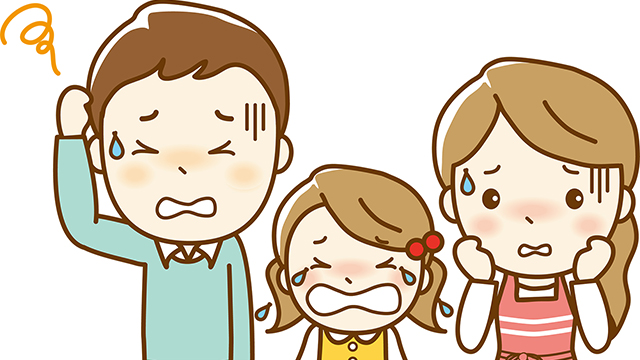

人は子どもを持つと「親」というものになります。
それまで１人の男性、1人の女性であった者が子を持ったとたんに「親」となるわけです。
当たり前ですね。
しかしよく考えてみるとこのことはなかなか大変な問題を含んでいます。
だって１度人の親となれば、その子が生きている限り（いや生きていなくても）永久に親であり続けるんですよ。
それまで只の男とか女であった者が、子を生んだとたん「親」というものになり親としての役割を担い続けなくてはならない。
「親」というものに期待されているありとあらゆる義務や役割を果たしていかなければならない。
子どもを養育し就学させ、基本的に子どもが成人するまでは子どもの犯した問題に責任を持たなければならない。
親の養育や就学義務は法律にも明記されているわけですし。
子を生んだ人なら誰でも経験していることですが、赤ん坊のときから幼稚園そして小学校から高校ぐらいにかけて大変な手間をかけて世話しなければならず、やっと大学へ行く頃になって少しホッとするとしてもこの間２０年近くもかかっているわけです。
もちろん子どもを1人前にするまでの教育費も莫大なものになっています。
子どもを育てるのにこれほど物心ともに親のエネルギー（負担）を必要とするのは、あらゆる生物の中で人間だけではないでしょうか。
特に母親の苦労は並たいていのものではありません。20代後半に子どもを産んだとして、30代～40代という人生でもっとも輝く時期、女性としてももっとも美しくある時期に髪をふり乱して子育てに奔走しなければならないのです。
ある意味、子育てとは親（特に母親）の自己犠牲の上に成り立っているといえるでしょう。
このように子育ては心身ともに、さらに金銭的にも大変な負担の上に成り立っている一大事業であり、多くの人はそれだけに「失敗」は許されないもの―やり直しのきかないもの―と感じているのではないでしょうか。
その気持ちは分かります。私も５人の子どもを育てたし、仕事上子どもを持つ親の皆さんと接することが多いので子育ての大変さは理解しているつもりです。
ただその上であえて言うと、今の親は「親」としての役割、義務そして責任を良くも悪くも大きくとらえ過ぎて必要以上に苦しんでいる人が多い気がします。
私が思うに、親はもっと「親」の仮面にがんじがらめに縛られず親でしか味わえない楽しみを感じて過ごしてもよいのではないか。
今の親は昔の親たちのように、大家族や近隣の共同体に守られていないせいか、子育ての全責任を自分たちだけで負おうとして歯を食いしばって頑張っていて、それが逆に子どもの成長にも家族の絆にも暗い影を落としているように見えるからです。
子どもに正しさを押しつけない
そんな真面目な親の皆さんにアドバイスするなら次のようなことです。
「子育てはもっと肩の力を抜いて良い」
確かに子どもが赤ん坊から幼児時にかけてはいつも注意していなければなりません。事故にあったり熱を出したり、基本的なしつけを怠ったりすることは避けるべきことですし、子どもの性格や行動形態を把握してできるだけ長所を伸ばすよう努めることは必要です。
しかし小学校高学年からはむしろ親は必要最低限の世話以外は手放していかなくてはいけません。少しずつ子どもから距離を置き、はなれて見守る姿勢へシフトしていきましょう。
「子どもはいちいち干渉しなくてもちゃんと育つもの」
という信頼をもって見守る立場です。
失敗を恐れないで下さい。
取り返しのきかない失敗などありません。
親だからといって子どもの前で全能である必要はないのです。まして若い親―私の言う若い親とは40代も含みます―は人間としてまだまだ未熟であって当然です。後でふり返って「あのときもっとああしておけば」という後悔も当然あることであって、そんなことは子どもの成育に大して影響しません。
もし良くない子育てがあるとしたら、親自身が「こうすべき」「ああすべき」というガチガチの固定観念にとらわれていて子どもにそれを強要する場合です。
たとえば親であるあなたが、何事も計画的に行動すべきという価値観をもっていて子どもが無計画でダラシないタイプだと、きっとイライラし正そうとするでしょう。
ところが子どもはコツコツやるより、一極集中型である程度追いつめられてからエンジン全開し、一気呵成に仕上げるのが得意であるかもしれません。
「何事も計画的に」というのはコツコツ型や仕事の段取りには有効な一つのあり方であって、人間としての正しいあり方とは限りません。
多くの人が信じている「正しさ」とは、たいていはこのように特定タイプのためや産業社会に適合するのに都合よく考案された相対的正しさであり、絶対的なものではありません。
あなたの子どもが芸術家タイプや直観ヒラメキ型なら「何事も計画的に」はジャマな習慣であるかもしれません。
ですからこの場合親の「正しさ」を押しつけることは、子どもの才能の芽を摘む可能性があるということです。
つまり「無計画でダラシない」ままにしておくことのほうが将来的にプラスの可能性が高いのです。←マア、ほとんどの親はそう思えないでしょうが。
子どもを手放せないのは親が握りしめているから
ですから親は、親としての責任をあまり強く意識しすぎないほうが良いのです。
最近メディアなどで「子への虐待」などがセンセーショナルに報道されたり、若者が問題を起こすとヒステリックに「親の責任を問う」声が多く、善良な親ほど神経質に子育ての責任を意識するようです。
私に言わせれば、子どもを放置したり虐待する親よりも子どもに関心を向けるあまり手をかけすぎる親のほうが断然多いし、その問題のほうが深刻だと感じています。子どもを握りしめて手放さない親のほうが多いのです。
だから親はそのような「不寛容」な世間の眼など気にすることなく、もっと大らかに伸びやかに子どもと接することを心がけて下さい。
私は何も「子どもに無関心でいろ」とか「放置しろ」と言ってるのでなく、子どもの本性を信頼し思春期になったら大人として扱い、良い意味で手放せと勧めているのです。
信じて手放さない限り子どもは健全に育たないからです。
しかし多くの親は、私がそう言ってもなかなか手放そうとしません・・・。
「頭では分かるんですけど・・・」とか
「先生のおっしゃるようになるべくうるさく言わないようにしてるんですが・・・」と答えることが多い。
その気持ちも分かります。
ですからこう考えてみて下さい。
もう子どもも中学生だ（実際は小学校高学年でも同じ）。彼（彼女）も大人の入口に差しかかっている。これ以上心配したり口をはさむことは成長にマイナスになる。大丈夫だ。彼（彼女）はきっと自分でやっていける。最終的には立派な大人になってくれる。これからは私も自分のやりたいことをやり子どものことは信頼して見守っていこう。
このようにです。それでも子どものことが心配になるなら自分自身が何を握りしめているのか思いを巡らせてみて下さい。
「こうあるべき」を強く握りしめていないか。自分の親から受けついだ古い価値観に囚われていないか。自分の過去の体験に起因するトラウマにとらわれていないか。
その結果子どもをコントロールしようとしているだけではないか。
あるいは世間の眼、常識などを意識するあまり親としての過剰な責任感―後ろ指をさされないかという恐れ―にとらわれていないか。
もしそうなら、それは真に子どものためになっているのか。「親」という役割を生きているだけではないのかと。
このように１度立ち止まって自分の心の中を探ってみるのです。
肩の力を抜いて子育てを楽しもう
親子関係というのは鏡のようなものです。子どもの言動の中に気になるものを見るとき、親の中にも同じものがあるか逆に「これだけは許せない」というとらわれがあるかどちらかであることが多いのです。
どちらにしてもそれは親の「こだわり」であり、自分の握りしめている古傷が刺激されて起こってくると考えられます。
ですから子どもの行状に強い心配や不安を覚える場合は、子どもにフォーカスするより自分と向き合い、こだわっている観念や記憶を癒すほうが解決の早道であることもあります。気づいたらやってみて下さい。
子育ては必ずしも一方的に親が子どもの面倒を見ることではありません。子育ての過程において子どもから教えられたり学ぶことも多いのです。
私はむしろ子どもを育てることを通じて、親も成長していくことを実感しています。
そう思い至ると、子育ては一方的に負担をかけられる行為ではなく、子どものために自分を犠牲にすることでもなく、人を育てるということこそが人を鍛え人を育てる営みそのものであることに気づきます。
そして色々苦労はありながらも、我が子の成長を見ていくことの喜びはやはり何物にも替え難いものがあります。
子育てはもっと楽しんでよいのです。
「親」というレッテルを自分に貼りつけ、親の責任を過剰に意識することは子どもを「教育すべき対象」と見てしまうことになります。
ですから「親」である前に1個の人間、失敗も欠点もある1個の人間として子どもに向き合うことが、かえって子どもにも重圧をかけず自然な触れ合いができるといえます。
どうでしょう。たまには親という窮屈な仮面を脱いで子どもと接してみては。
逆説的ですが、親の役割を演じすぎないことによって親子とも心身共に楽になり、かえって本来の親密な親子関係が見い出され、結果として子育てを楽しむことができるでしょう。
「子どもの教育」をマジメに考えすぎているお父さんやお母さんへ。
少し肩の力を抜いてみて下さい。